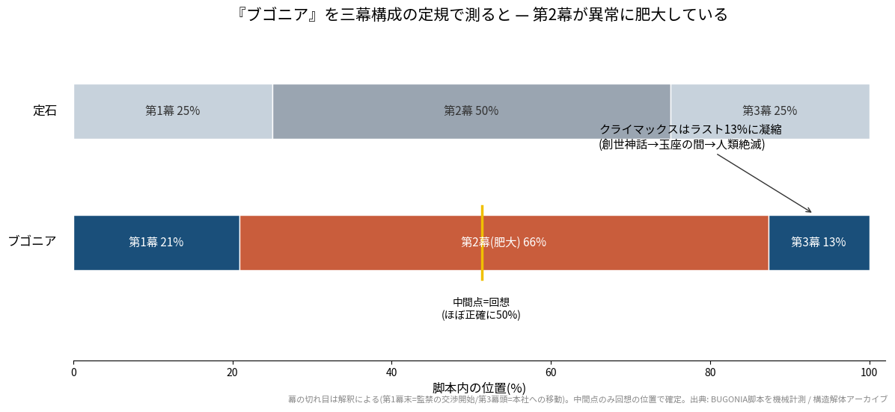
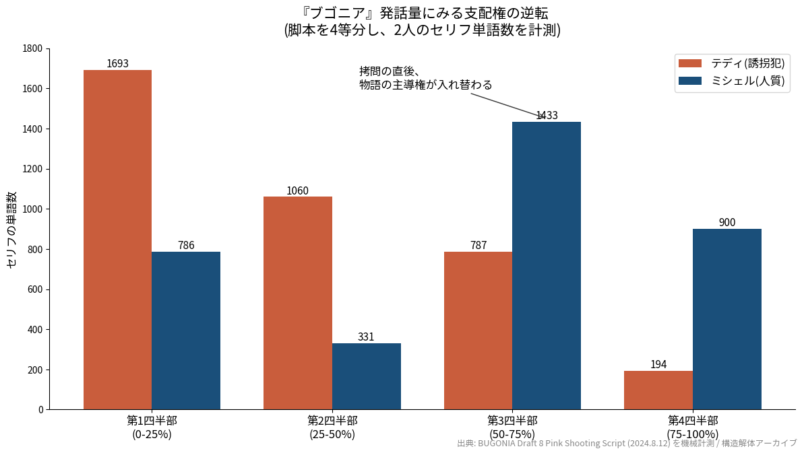
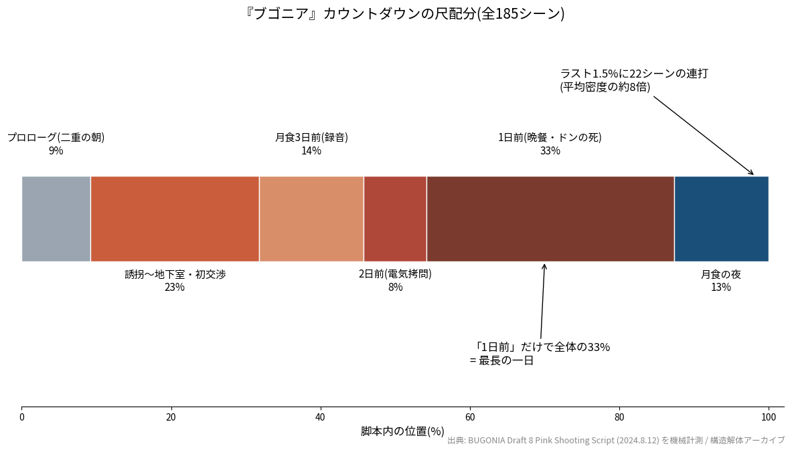

映画構造解体室 #01 — Structural Autopsy
※結末・ツイストまで全部書いています。鑑賞後にどうぞ。
『ブゴニア』の撮影稿(102ページ・全185シーン)をプログラムで数えてみると、誘拐犯テディのセリフは3,734語、地下室に鎖で繋がれるミシェルは3,450語でした。差はわずか7.6%。銃を持って監禁している側と、繋がれている側が、ほぼ同じだけしゃべっているんです。誘拐スリラーの形をしていますが、中身は言葉と言葉の勝負。実際、目を覚ましたミシェルにテディが最初にやることは、暴力でも尋問でもなく、クリップボードに用意した声明文の朗読です。「人類レジスタンス本部へようこそ。あなたはアンドロメダ人としてジュネーブ条約の適用外ですが、我々は人道主義の精神に敬意を表し、条約の指針を遵守するよう努めます」。誘拐犯が、人質に向かって開会宣言を読み上げる映画なんです。
この「映画構造解体室(Structural Autopsy)」は、脚本をデータで分解して、映画を語るときの材料を置いておくシリーズです。読みを押し付けるつもりはないので、まず「この作品だけの発見」を5つ並べて、そのあとに三幕構成の見取り図を添えました。どれを持ち帰ってどう使うかは自由です。数字はすべて公開されている脚本PDF(Script Slug掲載、2024年8月12日付のピンク撮影稿)を実際に数えたもの。図や数字は、出典を書いてもらえれば引用歓迎です。
養蜂家で陰謀論者のテディと、知的障害のあるいとこドン。二人は「世界を裏で操るのはアンドロメダ星人だ」と信じ、その正体だと確信した製薬企業CEOミシェルを誘拐して地下室に監禁します。剃髪し、宇宙人だと自白させようとするテディ。最初は理詰めでかわそうとするミシェルですが、やがて相手が、過去に自社の治験で壊した家族の息子だと気づき、個人の傷を突く反撃に転じます。録音の強要、電気拷問、晩餐での交渉、母をめぐる嘘。あらゆる「説得」が試されたすえに、ドンは自殺し、テディも死に、生き延びたミシェルは最後に本社のクローゼットから本当にテレポートします。彼女は本物のアンドロメダ皇帝でした。テディの妄想は、結論だけ見れば当たっていたことになります。皇帝は人類の絶滅を決定し、人間の消えた地球で、花に蜂がとまって映画は終わります。原作は韓国映画『地球を守れ!』(2003)、監督はヨルゴス・ランティモス、脚本はウィル・トレイシーです。
本題の前に、いちばん有名な物差しである三幕構成を当てておきます。いらない方は次の章へどうぞ。
『ブゴニア』は「月食まであと◯日」という締切つきの監禁劇なので、幕の比率を測ると歪みが数字に出やすい作品です。測った結果が図3。

比率はおおよそ 第1幕21% : 第2幕66% : 第3幕13%(幕境界は、第1幕末=監禁の交渉開始、第3幕頭=本社への移動、と置きました)。定石の 25:50:25 と比べると第2幕がかなり長く、第3幕がとても短くて、クライマックス(創世神話→玉座の間→人類絶滅)はラストの13%に詰め込まれています。それでいて折り返し地点はほぼ正確に50%。前半は定石どおり進み、後半だけ引き延ばされて、最後に一気に畳まれる形です。観ていて感じる「長く続く監禁と、あっという間に終わる世界」の印象は、この比率から来ていると考えられます。ここからが本題です。どの作品でも同じ5つの棚(人物・視点/構造/モチーフ・語彙/時間/トーン)で見ていきます。棚を固定しておくと、ほかの映画とも同じ物差しで見比べられるからです。
この映画で「誰の物語か」は、セリフ量にいちばん鮮明に出ます。脚本を4等分して語数を数えると、テディ対ミシェルで 1,693対786 → 1,060対331 → 787対1,433 → 194対900(図1)。

きれいに入れ替わっているんですが、グラフには出ない攻防が最初のブロックから始まっています。目覚めた直後のミシェルは、頭を剃られて鎖に繋がれた状態のまま、いきなり長広舌をふるうんです。「州警察とFBIが合同捜査に入ります。私は地域経済の要なので、知事を誘拐したのと同じ、いえそれ以上の官僚的緊急性で扱われます」。人質が誘拐犯を交渉のテーブルに着かせようとする演説で、テディの返しがまたいい。「……いや、すごい。今のは本当によかった。脈が上がってるもん、俺」。感心はするけれど、まったく効いていない。彼女が331語まで沈む2ブロック目は、録音の強要と電気拷問、つまり言葉が物理的に封じられる時間と重なります。ちなみにその録音がどんな出来かというと、「えー……私は宇宙から来たエイリアンです。母船が地球に来るので、新しいお友達を宇宙船に乗せてあげたいです。以上」。棒読みの極み。テディに「これはジョーク? 人類のユーモアのシミュレーション?」と真顔で聞かれます。
反撃側に回ったミシェルにも、一度だけ痛恨のミスがあります。テディが陰謀語りの中で shibboleths(シボレス)を「シャイボウレス」と読み間違えたとき、思わず「シボレスでは?」と発音を訂正してしまう。直後に椅子が壁に投げつけられます。25年のコーポレート・トレーニングを積んだ交渉のプロが、我慢できなかったのがマウンティングだった、というのが彼女という人をよく表しています。
そして逆転が完成するのが晩餐です。「ここはいつもお一人で?」「あなたの“運動”についてもっと知りたい」。質問を投げる側がミシェルに替わり、尋問していたはずのテディが、身の上を聞かれる側に回る。鎖に繋がれたまま、彼女は面接官の位置を取り戻しています。
普通の監禁ものなら、折り返し地点には脱出の手がかりや外部の介入が置かれるところです。『ブゴニア』のほぼ正確な真ん中にあるのは、モノクロの回想でした。しかも内容が、悪夢としか言いようがない。若きミシェルが治験被害の謝罪会見で「この件は決して過去にしません。永遠に悼み続けます」と完璧なスピーチを打つ横で、車椅子の母サンディが風船のようにふわふわと宙に浮き上がり、紫髪の少年テディが点滴チューブを手繰って必死に引き戻そうとしている。ミシェルはそれを見ながらスピーチを続け、治療費の全額負担を申し出て、こう締めます。「今回は弊社のおごりです!」。直後に自分の言葉選びに小さくひるむところまで含めて、完璧に嫌な回想です。
彼女はこの記憶で、目の前の誘拐犯が「あの会見の少年」だと気づきます。それまで相手を「よくいる過激派」として一般論で扱い全敗していたミシェルは、ここから先、テディ個人の傷だけを狙うようになる。物語を反転させる装置が、鍵でも銃でもなく、記憶なんです。しかもこの記憶を開けるのは音楽です。テディは拷問のBGMに、母の形見のラジカセでミュージカル『ヘアー』の「Good Morning Starshine」を流していました(脚本に6回登場します)。その同じ曲が、ミシェルの記憶を呼び起こす。自分の傷を慰めるための儀式が、結果的に、敵へ最強の材料を渡してしまう。テディの敗北は、母への愛の形から始まっていたことになります。
繰り返される単語を数えると、この映画の意地の悪さがよく見えます。「dialogue(対話)」はちょうど6回。ミシェルが「対話をしましょう」と持ちかけるたび、テディは「『対話』って呼ぶな。『セールスマンの死』じゃねえんだよ」と吐き捨てます。そして回想では、ミシェル自身が治験存続の判断を問われて「それはまた別の日のダイアログで」とかわしている。脚本のト書きには、この一言がテディに「ナイフのように刺さる」と書かれています。この映画で「対話」という言葉は一度も対話として機能せず、いつも力のある側の防具として出てくるんです。
「sorry」系は38回。気弱なドンは謝り続け、テディは「絶対に謝るな」と教え、ミシェルは謝罪を広報に使い、幼馴染の警官ケイシーは20年前の加害を謝りに来ます。この映画でいちばん印象的な謝罪を挙げるなら、テディが訪ねてきたケイシーを蜂の巣箱ごと叩きつけて殺したあとの場面でしょう。彼は殺した相手ではなく、倒れた巣箱に這い寄って泣きながら謝ります。「ごめん……本当にごめんな、お前たち……」。人間には一度も謝らない男が、蜂にだけ謝る。ついでに数えると「蜂」系の単語は39回で、「宇宙人」系の30回より多い。この脚本には、宇宙人より蜂のほうがたくさん住んでいます。
「月食まであと3日/2日/1日」の字幕は等間隔の時計のふりをしていますが、尺を測ると 3日前=14%、2日前=8%、1日前=33%(図2)。

「あと1日」だけで全体の3分の1を占め、そこに晩餐・決裂・ドンの死・母の死・隠し部屋・創世神話と、重要な場面がほぼ全部詰まっています。締切が近づくほど1日が濃く、長くなる。終盤に感じるあの圧は、この偏りから来ていると考えられます。そしてラストの人類絶滅モンタージュは、残り1.5%の区間に22シーンという密度で、平均のおよそ8倍。しかも1シーンごとのト書きがやたら具体的です。博物館で倒れた家族の、子どもの手の中で溶けていくアイスクリーム。抱き合ったまま息絶えた10代の恋人たち。テディの職場の物流センターで、床に「安らかに」横たわる同僚のティナ。そして最後はテディの家の、幼い彼を母が風呂に入れている写真です。冒頭でテディの朝とミシェルの朝を交互に見せた10分の「二重の朝」と、この終幕が対になっています。開幕は二人の人間を並べ、終幕は誰もいなくなった人類を並べる構成です。
シーン見出しの時間表記を数えると、昼156に対して夜22。監禁スリラーの直感に反して、狂気のほとんどは日光と蛍光灯の下で進みます。脚本上は地下室のシーンにさえ「DAY」と書かれている。象徴的なのが晩餐の場面で、時刻はまだ昼間なのに、テディは窓を全部黒布で覆って「ちゃんとしたディナーの雰囲気」を演出します。メニューは彼の唯一のレパートリーだというスパゲッティ。ミシェルはテディの母の服を着せられ、足首は床に釘打ちされた椅子に手錠で繋がれ、ト書きいわく「奇妙な家族の晩餐の図」。この映画の怖さはこの手触りです。闇に潜む恐怖ではなく、明るい場所で礼儀正しく進む恐怖。ミシェルが身代金でも権力でもなければ目的は性的なものかと探りを入れたとき、テディが「その可能性を見越して、私といとこは化学的去勢を済ませています」と事務連絡のように答え、彼女が思わず「なんてこと」と天を仰ぐ場面まで、すべて真昼の出来事です。
タイトルの「ブゴニア」は、牛の死骸から蜜蜂が湧くという古代の俗信のこと。花に蜂がとまるショットで始まった脚本は、まったく同じ画で閉じます。ただし1回目の蜂はテディの陰謀論講義の挿絵で、2回目はもう誰の講義でもない、ただの世界。185シーンかけて、蜂から少しずつ「意味」を剥がしていく映画です。
ここからは編集部の解釈です。唯一の正解ではないので、別の束ね方をしてもらって構いません。 あくまで一例として。
5つの切り口をひとつの軸でまとめると、この脚本は「説得の実験」の記録に見えてきます。カウントダウンの各日に、違う種類の説得が1つずつ割り当てられているからです。
証拠も暴力も礼節も人を動かせず、動かしたのは一級の作り話でした。しかも裏側では、同じ実験がもう1本走っています。ミシェルがドンを落とすのも「宇宙船に連れて行ってあげる」という物語で、これはテディがドンを支配してきた道具(「お前は英雄になる」)と同じものです。ドンが死ぬ直前のやりとりは、この映画でいちばん静かで、いちばん残酷だと思います。「もしあなたが本当に宇宙人なら、僕を連れて行ってくれる?」とドンは聞き、ミシェルは逃がしてもらうために即座に頷く。「もちろんよ、ドン。地球を出ましょう。約束する」。するとドンは微笑んで、「ありがとう。でも、テディ抜きでは行けない」と言い、「ごめんって伝えて。愛してるって」と言い残して銃を自分に向けます。二つの物語がぶつかる場所で、彼はこの映画で唯一、愛によって説得される人間として死ぬ。そして脚本は感傷に浸る間を与えません。次の場面でミシェルは、鎖の届かない位置に倒れたドンの靴紐を指先でほどき、紐を引いて遺体をたぐり寄せ、ポケットから鍵を探します。
そして結末です。唯一効いた説得だった創世神話は、真実でした。 結末から読み返すと、テディの妄想的な手続きが次々に回収されます。「髪は通信アンテナだ」と剃髪した彼に、玉座の間の皇帝は「髪がなければ交信できなかった」と言う。「この電圧に耐えるのは王族だけ」という判定も、彼女は本当に皇帝だった。彼のやり方は機能していたのに、「正しければ救われる」という前提のほうが外れていた、という読み方ができます。テディは真実を証明しようとした3つの形式で全敗し、真実が物語として語られたときにだけ、それを受け取れました。観客も同じです。あの演説を見事な作り話として観て、20分後に真実だったと知らされる。ちなみに人類絶滅の決定は、玉座の間で小さなキューブの中の四角形に、皇帝がためらいながら指先で触れるだけで下されます。185シーンずっと言葉を尽くしてきた映画が、最後の最後の決定だけは、一言もなしに終わらせるんです。
脚本がわざと答えを保留している点も、置いておきます。
シーン数・語数・語彙頻度・位置はすべて、公開脚本PDF(Script Slug、教育目的のfair use)を機械計測したものです。本文中のセリフとト書きの引用は同PDF(2024年8月12日付ピンク撮影稿)から訳出しました。計測データ(JSON)は希望者に公開します。反論・再計測は歓迎です。図表・数値は「映画構造解体室 / Structural Autopsy」のクレジット明記で引用自由です。
次回予告: 映画構造解体室 #02。リクエストはコメントで。自作脚本の構造診断「脚本ドック」も準備中です。